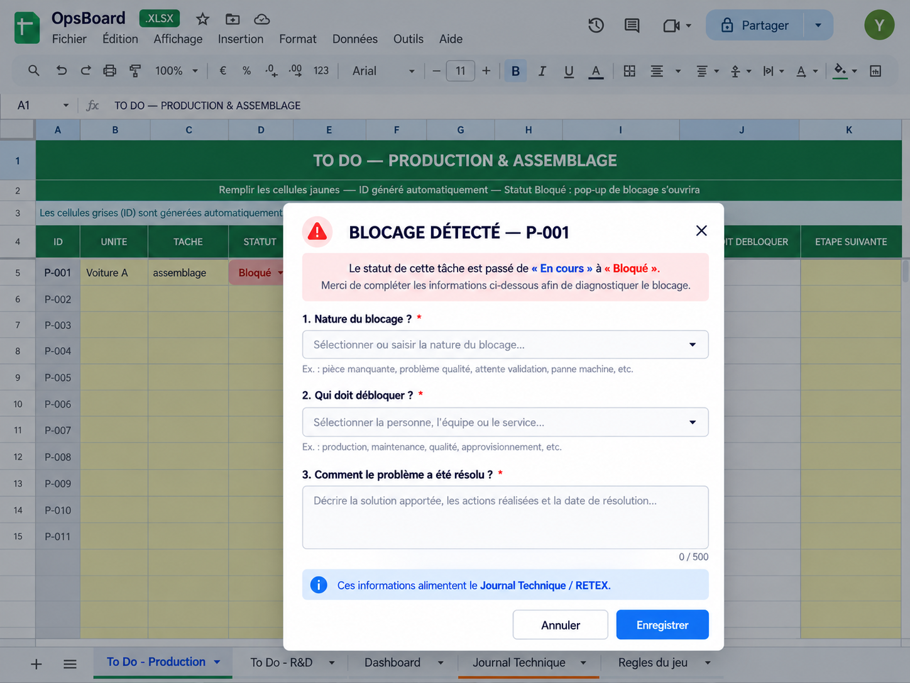

OpsBoard
Un outil de pilotage opérationnel que j’ai conçu et mis en place pour centraliser le suivi des projets, rendre les blocages visibles et capitaliser les apprentissages.
Voir les blocages. Agir plus vite.
Lorsque le suivi d’un projet repose sur plusieurs échanges et supports, il devient plus difficile de conserver une vision commune des priorités et des points de friction.
J’ai conçu OpsBoard pour rendre ce suivi plus lisible, plus structuré et plus facilement exploitable par l’équipe.
Centraliser
Regrouper l’information utile dans une même vue de pilotage.
Alerter
Lorsqu’un blocage apparaît, l’information peut être transmise automatiquement à l’équipe concernée.
Capitaliser
Conserver les enseignements utiles pour éviter de repartir systématiquement de zéro.
Faire circuler l’information au bon moment.
Le suivi est centralisé dans Google Sheets. J’ai ajouté une couche d’automatisation afin que certaines évolutions du statut d’une tâche puissent déclencher automatiquement les actions prévues.
Parmi elles : transmettre une alerte à l’équipe concernée lorsqu’un blocage est identifié, sans demander à l’utilisateur de refaire manuellement la circulation de l’information.

Donner à chaque tâche un état clair.
Chaque tâche suit un parcours simple afin de rendre immédiatement visible son état d’avancement.

Quand une tâche passe en « Bloqué ».
Le changement de statut déclenche automatiquement une étape de qualification du problème. L’utilisateur indique ce qui bloque et les personnes susceptibles d’intervenir.
Une notification est ensuite envoyée à l’équipe concernée afin que le blocage soit visible sans dépendre uniquement d’un échange manuel.
Comprendre clairement ce qui bloque la tâche.
Transmettre automatiquement l’information à l’équipe concernée.
Traiter le blocage puis conserver la solution apportée.

Transformer une résolution en apprentissage.
Le workflow ne s’arrête pas au moment où la tâche est débloquée.
Une fois le problème résolu, les informations utiles sont conservées afin de faciliter la résolution d’une situation similaire à l’avenir.
Transformer chaque résolution en connaissance

Une vue synthétique de l’activité.
La synthèse permet de retrouver rapidement les informations nécessaires au pilotage : avancement, priorités et points nécessitant une attention particulière.
.png)
Voir. Agir. Capitaliser.
Voir
Donner une lecture commune de l’avancement et des priorités.
Agir
Lorsqu’un blocage apparaît, le qualifier et transmettre l’information à l’équipe concernée.
Capitaliser
Transformer les solutions apportées en apprentissages utiles pour la suite.
Cette présentation décrit le principe fonctionnel et mon raisonnement de conception. Les données réelles, paramètres internes, contenus opérationnels et informations confidentielles ne sont pas reproduits.